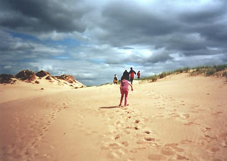

Hier mal meine “pauschalisierten” Urteile zu meinem Jahr in Camphill:
Negatives…
Camphill zu bewerten ist gar nicht so einfach. Grundsätzlich wird da viel zu dogmatisch angegangen. Nur weil die Waldorf-Pioniere vor längerer Zeit etwas für gut befunden haben, und damals auch wirklich bahnbrechend gut und im positiven Sinne revolutionär war, sollte man sich doch gedanklich etwas modernisieren und lieber Pragmatismus ansetzen und neue Wege suchen. Sie begründen die teils antiquierten und konservativen Methoden immer mit dem Wohlergehen der Kinder. Aber sind Gottesdienste vor extrem unruhigen Kindern, die durch die langen Reden immer ausflippen denn wirklich sinnvoll? Oder warum soll den ruhige klassische Musik während des Abwaschens schlecht sein, die die Kinder doch beruhigt? Antwort war immer, entspricht nicht den Camphill-Regeln nach Rudolf Steiner, wird also nicht gemacht. Teilweise hatten viele Zeremonien doch ziemlichen Sektencharakter. Zum Glück waren wir die jüngeren Co-Worker im Haus alle ziemlich einig, nahmen es mit mehr Humor und fanden auch andere sinnvollere Wege, die Kinder zu betreuen. Nicht, dass alle camphillschen Therapien und Vorgehensweisen Schrott sind, es ist wirklich viel Sinnvolles dabei, aber einige Sachen sollte man wirklich überdenken.
Leider gab es auch ziemlich unfaire Aktionen, so wurde uns (Jan-Dirk und ich) von einem Camphill-Koordinator angedroht, unseren Zivlidienst nicht anrechnen lassen, wenn wir nicht auf unseren Ferien-Anspruch verzichteten und 16 Wochen durcharbeiteten. Leider gab es da nicht viel Unterstützung von andere Verantwortlichen, da wurde eigentlich mehr geduckt. Wo waren denn plötzlich die garantierten flachen Hierarchien, von denen immer gesprochen wurde?? Da Murtle Estate (trotz Aberdeen-Nähe) in sich ein kleines und teils auch isoliertes Dorf ist, waren interessante Beobachtung was Gruppendynamik angeht möglich, deren Mechanismen sich durch völlig überarbeitete Leute noch weiter verstärkten. Da musste man schon des öfteren schmunzeln, was da abging…
Es scheint sich aber ein Wandel zu ergeben, viele jüngere Co-Worker, die jetzt schon länger dort sind, ziehen es jetzt vor, die Betreuung der Kinder etwas mehr als Arbeit anzusehen und haben dann auch richtige Wohnungen ausserhalb von Camphill und besitzen ein geregeltes Stundenarbeitskonto und werden auch anständig bezahlt. Das spricht natürlich komplett gegen die Camphill-Philosophie, wo die Betreuung keine Arbeit sondern einfach das normale Leben ist. Insofern spielen Pausen und freie Tage nicht so die Rolle, da man vom Leben an sich ja auch keine Pause einfordert. Auf der anderen Seite sieht man aber, dass die Leute von außen guten Abstand gewinnen und dies viele positive Effekte auf die Arbeit mit den Kindern hatte. Viele ältere Co-Worker sahen das aus meiner Sicht auch ein, und würden hätten ebenfalls am liebsten ein bisschen mehr Abstand gewonnen und ein “privates” Leben angefangen. Indiz war, dass sehr viele Mitte 30 waren und aussahen wie 55. Allerdings scheint es, dass Leute, die 15 Jahre dort Tag für Tag verbringen nicht loslassen können, es ensteht mit der Zeit anscheinend eine klitzel-kleine Hassliebe, womit ich natürlich nicht meine, dass sie im Kern nichts mehr mit Camphill anfangen können. Wir Einjahres-Co-Worker haben diese Leute immer “stranded-people” genannt, was die Sache ganz gut ausdrückt.
Natürlich sollte es nicht das Ziel zu sein, die Betreuung als Beamtenjob zu sehen, und Punkt 17:00 den Arbeitstag abzuschliessen, egal was passiert. Dafür hat man einfach zu viel mit Menschen zu tun. Ich denke es sollte wie überall ein Mittelweg geben: Die Kinder auf jeden Fall eng in sein Leben miteinzubeziehen, aber sich dennoch nicht völlig fertigmachen und durch mehr Privatsphäre und Freizeit etwas Abstand, Objektivität und Kraft gewinnen. Man kommt dadurch auch viel besser auf andere Gedanken und neue Ideen was für die Kinder gut ist. Fachidiotie ist einfach wie überall der falsche Weg.

…und Positives (!!überwiegt!!)
Nach dem Negativ-Abschnitt scheint mein Jahr etwas negativ angehaucht zu sein, jetzt aber zum Ende (soll ja mehr im Gedächtnis bleiben) mein absolut positives Fazit:
Grundsätzlich hat sich dieses Jahr auf jeden Fall gelohnt!! Man betreute viele liebe Kinder und enge Freundschaften mit anderen Co-Workern entstanden, die bis heute halten. Man lernte nach seinem doch sehr lockeren Abitur auch mal den harten Arbeitsalltag kennen. So viel hatte ich bis dahin noch nie geschuftet. Sehr positiv ist, dass für die Kinder, die sonst in der Gesellschaft untergehen würden echt alles getan wird. Für die Kinder ist es also das Paradies (was ihnen natürlich zu gönnen ist). Alles sehr naturbezogen, viele junge Leute aus vielen Ländern, keine Medikamente, die die Kinder apathisch stillstellen, gesunde Nahrung und eine sehr gute Ausstattung (schöne Häuser, Schimmbad, Schule).
Die Kinder waren alle sagenhaft. Ich hab von Anfang mich mit Absicht nicht mit der Theorie, was z.B. den Autist oder einen Schwererziehbaren allgemein ausmacht
beschäftigt. Deswegen kann ich auch bis heute keine allgemeinen Eigenschaften des Autismus o.ä. nennen. Was ich damit sagen will ist, dass die Kinder für mich nicht den Stempel Autist o.ä. hatten sondern ganz einfach sie selbst ohne irgendwelchen Theorieoberbau waren. Was ich also vor allem gelernt habe ist, dass wirklich alles Maßstab ist. Wenn alle Menschen in Aberdeen sich ähnlich wie die Kinder verhalten würden, dann wäre ich vielleicht der Betreute in Murtle Estate gewesen, den man zu den Gottesdiensten und Therapien schieben würde?!
Auch ist mir klar geworden, dass wir sehr in Schubladen einordnen. Wenn ich jetzt mal vergleiche, wie ich die Kinder beim ersten Treffen eingeordnet habe und wie sie wirklich waren, ergab sich eine so grosse Diskrepanz, wie ich sie nicht für möglich gehalten hätte. Berührungskontakt und Ablehnung mit den etwas “anderen” Menschen ensteht also meistens aus Unwissenheit und der resultierenden Angst. Natürlich kann man das Schubladen-Denken nicht komplett ablegen (wir sind und bleiben schließlich Menschen), aber man sollte relativieren und nicht konsequent Leute abstemplen oder sich für etwas Besseres oder Schlechteres halten.
Ich denke, dass ein Jahr genau die richtige Länge ist, man gewinnt viele Einblicke, aber hat es auch etwas einfacher wieder etwas Abstand zu gewinnen und nicht auch einer von den “stranded people” zu werden. Muss aber zugeben, dass sich das leicht sagen lässt, da sowieso schon davor feststand, dass ich Informatik studieren würde. Für die Interessierten, die sich beruflich in Richtung Pädagogik orientieren und Camphill-Fans werden wollen, existiert auch eine Kooperation mit der Aberdeen-Uni, so dass man innerhalb von 3 Jahren ein Bachelor in Heilpädagik machen kann.
Also Abiturienten, traut euch und probiert das Jahr mal aus. Muss euch aber etwas vorwarnen, das ziemlich internationale Publikum hat abgenommen und es hängen fast nur noch Deutsche (sogenannte germs ;) rum, die dann nur Deutsch rumlabern, was wie ich finde ziemlich ätzend ist, wenn man schon im Ausland ist. Ist auch gegenüber den Kindern sehr respektlos. Naja, falls ihr die Quote anheben wollt und noch Fragen ausstehen, kontaktiert mich und ich helfe euch sehr gerne weiter.
PS: Es lebe der rechte Winkel!!
Es existiert außer meinem noch ein weiterer Erfahrungsbericht von Jan Schulz